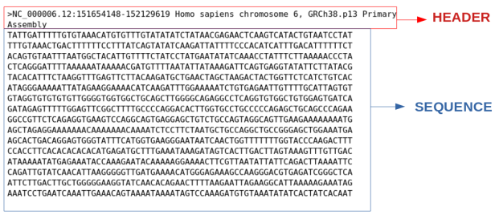
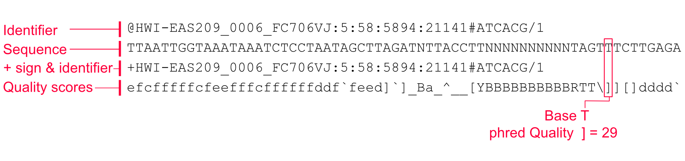
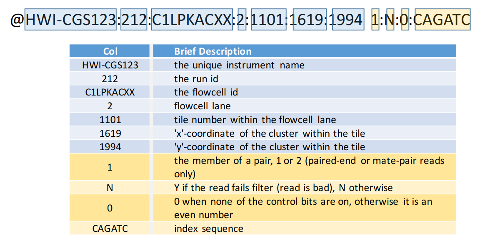

FASTA
FASTA is text-based format for representing nucleotide or peptide sequences, where each sequence is preceded by a single-line description starting with a “>” character.

.fnacan be used for nucleotide sequences.faacan be used for amino acid sequences.frncan be used for RNA sequences.facan be used for either nucleotide or amino acid sequences
FASTQ
FASTQ format is a text-based format for storing both nucleotide sequences and their corresponding quality scores. Each sequence entry consists of four lines: * a sequence identifier starting with “@” * the raw sequence letters * a “+” separator line * and a line with quality scores encoded as ASCII characters


SAM
SAM (Sequence Alignment Map) is a tab-delimited text format for storing biological sequence alignment data. A SAM file consists of two parts: an optional header section and an alignment section.
Header Section
Header lines begin with @ and are optional but recommended:
| Tag | Description |
|---|---|
@HD |
File-level metadata: format version and sort order |
@SQ |
Reference sequence dictionary (name, length) |
@RG |
Read group (sample, library, platform) |
@PG |
Program used to generate or process the file |
@CO |
One-line free-text comment |
Alignment Section
Each alignment record has 11 mandatory fields:
| Col | Field | Description |
|---|---|---|
| 1 | QNAME |
Query template name (read name) |
| 2 | FLAG |
Bitwise flag describing alignment properties |
| 3 | RNAME |
Reference sequence name |
| 4 | POS |
1-based leftmost mapping position |
| 5 | MAPQ |
Mapping quality (-10 log₁₀ probability of wrong mapping) |
| 6 | CIGAR |
CIGAR string describing read alignment |
| 7 | RNEXT |
Reference name of the mate/next read |
| 8 | PNEXT |
Position of the mate/next read |
| 9 | TLEN |
Template length (insert size) |
| 10 | SEQ |
Segment sequence |
| 11 | QUAL |
Phred-scaled base quality scores (ASCII, offset +33) |
FLAG Values
Each FLAG is a sum of any of the following bitwise values:
| Bit | Value | Description |
|---|---|---|
| 0x1 | 1 | Read paired |
| 0x2 | 2 | Read mapped in proper pair |
| 0x4 | 4 | Read unmapped |
| 0x8 | 8 | Mate unmapped |
| 0x10 | 16 | Read on reverse strand |
| 0x20 | 32 | Mate on reverse strand |
| 0x40 | 64 | First in pair (read 1) |
| 0x80 | 128 | Second in pair (read 2) |
| 0x100 | 256 | Secondary alignment |
| 0x200 | 512 | Read fails platform/vendor quality checks |
| 0x400 | 1024 | PCR or optical duplicate |
| 0x800 | 2048 | Supplementary alignment |
For example, FLAG 99 = 1+2+32+64 means the read is paired, properly paired, the mate is on the reverse strand, and this is read 1.
CIGAR String
The CIGAR string describes how the read aligns to the reference:
| Op | Description |
|---|---|
M |
Alignment match (match or mismatch) |
I |
Insertion to the reference |
D |
Deletion from the reference |
N |
Skipped region from reference (e.g., intron) |
S |
Soft clipping (clipped bases in SEQ) |
H |
Hard clipping (clipped bases not in SEQ) |
P |
Padding (silent deletion from padded reference) |
= |
Sequence match |
X |
Sequence mismatch |
For example, 50M2I30M means 50 bases match, 2 inserted bases, then 30 more matching bases.
File Size
- Exome: >50 GB
- Whole genome: 800 GB – 1 TB
BAM
BAM (Binary Alignment Map) is the binary, compressed equivalent of SAM. It stores identical information but in a more space-efficient binary format.
Key Characteristics
- Binary, BGZF-compressed (Blocked GNU Zip Format) version of SAM
- Requires an index file (
.baior.csi) for rapid random access to specific genomic regions - Indexing is done with
samtools index - Must be coordinate-sorted before indexing
Common Operations
# Convert SAM to BAM
samtools view -bS input.sam -o output.bam
# Sort BAM by coordinate
samtools sort output.bam -o output.sorted.bam
# Index sorted BAM
samtools index output.sorted.bam
# View BAM as text
samtools view output.sorted.bam
# View specific region
samtools view output.sorted.bam chr1:1000000-2000000File Size
- Exome: 2 – 20 GB
- Whole genome: 100 – 300 GB
CRAM
CRAM is a highly space-efficient, reference-based compression format for storing sequence alignment data. It was developed by the European Bioinformatics Institute (EBI) and is supported by SAMtools and most modern NGS pipelines.
Key Characteristics
- Stores reads as differences from a reference genome, yielding much smaller files than BAM
- Lossless or lossy compression options (lossy discards low-utility quality scores)
- Requires access to the reference genome used during alignment for decoding
- Supported by a
.craiindex file - Typical compression: ~30–50% smaller than BAM for the same data
CRAM vs BAM vs SAM
| Feature | SAM | BAM | CRAM |
|---|---|---|---|
| Encoding | Plain text | Binary | Binary |
| Compression | None | BGZF (gzip) | Reference-based |
| Typical WGS size | ~800 GB | ~100–300 GB | ~30–150 GB |
| Requires reference | No | No | Yes |
| Random access | No | Yes (with .bai) | Yes (with .crai) |
Common Operations
# Convert BAM to CRAM
samtools view -C -T reference.fa -o output.cram input.bam
# Index CRAM
samtools index output.cram
# Convert CRAM back to BAM
samtools view -b -T reference.fa -o output.bam input.cramVCF
Variant Call Format (VCF) is a standard text-based format for storing gene sequence variations such as SNPs, indels, and structural variants. It is based on alignments in SAM/BAM format.
Structure
VCF files consist of a meta-information header, a header line, and data lines.
##fileformat=VCFv4.2
##FILTER=<ID=PASS,Description="All filters passed">
##INFO=<ID=DP,Number=1,Type=Integer,Description="Total Depth">
##FORMAT=<ID=GT,Number=1,Type=String,Description="Genotype">
#CHROM POS ID REF ALT QUAL FILTER INFO FORMAT SAMPLE1
chr1 925952 rs123 C T 50 PASS DP=100;AF=0.5 GT:DP 0/1:100Header Lines
- Lines starting with
##are meta-information lines (key=value pairs) - The last header line starts with
#CHROMand defines the column names
8 Mandatory Columns
| Col | Field | Description |
|---|---|---|
| 1 | CHROM |
Chromosome name |
| 2 | POS |
1-based position of the variant |
| 3 | ID |
Variant identifier (e.g., dbSNP rs ID, or . if unknown) |
| 4 | REF |
Reference allele at this position |
| 5 | ALT |
Alternate allele(s), comma-separated |
| 6 | QUAL |
Phred-scaled quality score for the variant call |
| 7 | FILTER |
Filter status: PASS or reason for filtering |
| 8 | INFO |
Semicolon-separated key=value pairs of variant annotations |
Optional Columns
| Col | Field | Description |
|---|---|---|
| 9 | FORMAT |
Colon-separated list of per-sample field keys |
| 10+ | SAMPLE |
Per-sample data matching the FORMAT field |
Common INFO Fields
| Tag | Description |
|---|---|
DP |
Total read depth at the site |
AF |
Allele frequency |
AN |
Total number of alleles in called genotypes |
AC |
Allele count |
MQ |
RMS Mapping Quality |
Genotype (GT) Field
The GT field in FORMAT encodes the genotype as allele indices separated by / (unphased) or | (phased):
0/0— homozygous reference0/1— heterozygous1/1— homozygous alternate1/2— heterozygous with two non-reference alleles./.— missing genotype ## BCF
BCF (Binary Call Format) is the binary, compressed equivalent of VCF — analogous to the BAM/SAM relationship. It stores identical variant call information in a more efficient binary format.
Key Characteristics
- Much faster to read/write and smaller than VCF for large datasets
- Can be indexed with
.csiindex files for random access - Fully inter-convertible with VCF using
bcftools
Common Operations
# Convert VCF to BCF
bcftools view -O b -o output.bcf input.vcf.gz
# Index BCF
bcftools index output.bcf
# Convert BCF back to VCF
bcftools view -O v -o output.vcf input.bcf
# Filter BCF/VCF
bcftools filter -e 'QUAL<30 || DP<10' -o filtered.bcf input.bcfGTF
Gene Transfer Format (GTF) is a file format used to hold information about gene structure. It is a tab-delimited text format that consists of 9 columns: 1. seqname: Name of the chromosome or scaffold; chromosome names can be given with or without the ‘chr’ prefix. 2. source: Name of the program that generated this feature, or the data source (database or project name). 3. feature: Feature type name (e.g., Gene, Variation, Similarity). 4. start: Start position of the feature, with sequence numbering starting at 1. 5. end: End position of the feature, with sequence numbering starting at 1. 6. score: A floating point value. 7. strand: Defined as + (forward) or - (reverse). 8. frame: One of ‘0’, ‘1’ or ‘2’. ‘0’ indicates that the first base of the feature is the first base of a codon, ‘1’ that the second base is the first base of a codon, and so on. 9. attribute: A semicolon-separated list of tag-value pairs, providing additional information about each feature.
GFF3
GFF3 (General Feature Format version 3) is the current standard for describing genomic features. It is an improvement over GFF2/GTF with better support for complex gene structures and hierarchical relationships between features.
9 Mandatory Columns (tab-delimited)
| Col | Field | Description |
|---|---|---|
| 1 | seqid |
Chromosome or scaffold name |
| 2 | source |
Program that generated the feature, or database name |
| 3 | type |
Feature type using Sequence Ontology terms (e.g., gene, mRNA, exon, CDS) |
| 4 | start |
1-based start position |
| 5 | end |
1-based end position (inclusive) |
| 6 | score |
Floating point score, or . if not applicable |
| 7 | strand |
+ (forward), - (reverse), . (unstranded), or ? (unknown) |
| 8 | phase |
For CDS features: 0, 1, or 2 (reading frame offset); . otherwise |
| 9 | attributes |
Semicolon-separated tag=value pairs |
Key Attributes
| Attribute | Description |
|---|---|
ID |
Unique identifier for the feature within the file |
Name |
Display name for the feature |
Parent |
Establishes parent–child relationships (e.g., exon’s parent is an mRNA) |
Dbxref |
Database cross-reference |
Note |
Free-text note |
Example
##gff-version 3
chr1 Ensembl gene 11869 14409 . + . ID=ENSG00000223972;Name=DDX11L1;biotype=transcribed_unprocessed_pseudogene
chr1 Ensembl mRNA 11869 14409 . + . ID=ENST00000456328;Parent=ENSG00000223972;Name=DDX11L1-202
chr1 Ensembl exon 11869 12227 . + . Parent=ENST00000456328
chr1 Ensembl exon 12613 12721 . + . Parent=ENST00000456328
chr1 Ensembl exon 13221 14409 . + . Parent=ENST00000456328GFF3 vs GTF
| Feature | GTF | GFF3 |
|---|---|---|
| Hierarchy | Implicit (by gene_id/transcript_id) | Explicit via Parent= attribute |
| Feature types | Restricted (gene, transcript, exon, CDS) | Any Sequence Ontology term |
| Multiple parents | Not supported | Supported |
| UCSC/Ensembl | Common for downloads | Increasingly adopted |
BED
BED (Browser Extensible Data) is a flexible tab-delimited format for describing genomic regions. It is widely used for representing peaks, intervals, annotations, and other positional data in genome browsers (UCSC, IGV).
Coordinates
BED uses 0-based, half-open coordinates: the start position is 0-indexed and the end is exclusive. For example, chr1 0 100 spans the first 100 bases.
This differs from SAM/VCF/GFF3 which use 1-based coordinates.
Fields
BED has 3 required fields and up to 12 fields total:
| Col | Field | Required | Description |
|---|---|---|---|
| 1 | chrom |
Yes | Chromosome name |
| 2 | chromStart |
Yes | 0-based start position |
| 3 | chromEnd |
Yes | End position (exclusive) |
| 4 | name |
No | Name of the feature |
| 5 | score |
No | Score (0–1000) |
| 6 | strand |
No | + or - |
| 7 | thickStart |
No | Start position for thick drawing |
| 8 | thickEnd |
No | End position for thick drawing |
| 9 | itemRgb |
No | Display color (R,G,B) |
| 10 | blockCount |
No | Number of blocks (exons) |
| 11 | blockSizes |
No | Comma-separated list of block sizes |
| 12 | blockStarts |
No | Comma-separated block start positions (relative to chromStart) |
Example
chr7 127471196 127472363 Pos1 0 + 127471196 127472363 255,0,0
chr7 127472363 127473530 Pos2 0 + 127472363 127473530 255,0,0bedGraph
bedGraph is a variant of the BED format for displaying continuous-valued data (e.g., sequencing coverage, ChIP-seq signal) across genomic coordinates. Each line defines a region and an associated data value.
Format
track type=bedGraph name="Coverage" description="Read depth"
chr1 0 1000 5.0
chr1 1000 2000 12.3
chr1 2000 2500 0.0- Uses 0-based half-open coordinates (same as BED)
- Only 4 columns:
chrom,start,end,value - Regions must be sorted and non-overlapping within a chromosome
- The optional
trackheader line provides display metadata
BigWig / BigBed
BigWig and BigBed are binary, indexed versions of WIG/bedGraph and BED files respectively. They are designed for efficient remote access and visualization in genome browsers.
| Format | Text equivalent | Use case |
|---|---|---|
BigWig (.bw) |
WIG / bedGraph | Continuous signal (coverage, scores) |
BigBed (.bb) |
BED | Discrete features/annotations |
Key Advantages
- Indexed: supports fast random access to any genomic region
- Remote access: genome browsers (UCSC, IGV) can stream only the required region
- Much smaller than equivalent text files
Common Operations
# Convert bedGraph to BigWig
bedGraphToBigWig input.bedGraph chrom.sizes output.bw
# Convert BED to BigBed
bedToBigBed input.bed chrom.sizes output.bb
# Extract a region from BigWig to bedGraph
bigWigToBedGraph -chrom=chr1 -start=0 -end=1000000 input.bw output.bedGraph